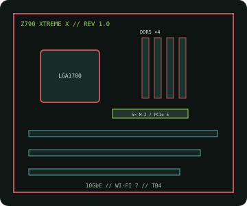

[ INDIVIDUAL COMPONENT // MOTHERBOARDS ]
GIGABYTE Z790 AORUS XTREME X (rev. 1.0)
E-ATX LGA1700 flagship with DDR5, PCIe 5.0, five M.2 positions, Wi-Fi 7, 10GbE and dual Thunderbolt 4.

IDENTIFICATION: Exact product is Z790 AORUS XTREME X rev. 1.0; the "X" suffix distinguishes this refresh from earlier XTREME boards.
Specifications
| Exact board / revision | GIGABYTE Z790 AORUS XTREME X, rev. 1.0 |
|---|---|
| Socket / chipset / CPU | LGA1700, Intel Z790 Express; 12th–14th Gen Intel Core desktop families when individually listed with the required BIOS. |
| Form factor | E-ATX, approximately 305 × 285 mm; check case width and expansion-card clearance. |
| Memory | Four dual-channel DDR5 DIMM sockets, up to 256 GB listed capacity; use QVL-supported modules and firmware for high-speed XMP. |
| PCI Express | One CPU-connected PCIe 5.0 x16 slot (which operates at x8 if the shared CPU M.2 socket is populated) and one chipset-connected PCIe 3.0 x4 x16-length slot. |
| Storage | Five M.2 sockets (one PCIe 5.0 x4 and four PCIe 4.0 x4) and four SATA 6 Gb/s ports; exact lane sharing varies by socket. |
| Networking / I/O | 10GbE and 2.5GbE Ethernet, Wi-Fi 7/BT, dual Thunderbolt 4 USB-C and USB 3.2 rear/front connections. |
| BIOS / compatibility | Check revision-specific CPU table and minimum BIOS before using 13th/14th Gen processors; observe QVL and M.2 lane-sharing notes. |
Compatibility and service notes
Use the XTREME X product's own rev. 1.0 firmware; do not assume that similarly named Z790 XTREME firmware is interchangeable. Verify CPU BIOS support, DDR5 memory QVL, M.2/SATA sharing and E-ATX case clearance in the manufacturer files.
Record printed revision and installed BIOS before service. Disconnect power, use ESD-safe handling and follow the board manual for firmware recovery.
Manufacturer sources
- GIGABYTE — Z790 AORUS XTREME X rev. 1.0 specificationsOfficial product specification, I/O and manual.
- GIGABYTE — XTREME X rev. 1.0 CPU support and BIOSRevision-specific CPU qualification and firmware.